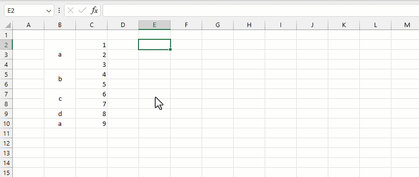
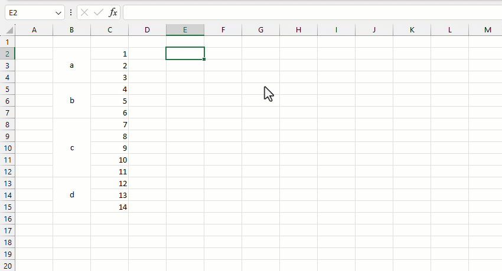

VD1: tính tổng theo từng tiêu chí cho các ô trộn (mergecells).
VD2: Lấp đầy các ô được trộn (đã merge).
Related function
INDEX.ADJ Hàm thống kê chi tiết thông số cho các phần tử liền kề bằng nhau (Adjacent) trong một mảng
GROUP Phân nhóm bảng dữ liệu dựa trên trường (cột) chỉ định, hỗ trợ tính toán tùy chỉnh.
Return to Home